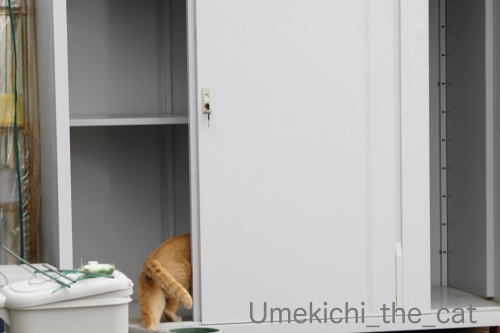
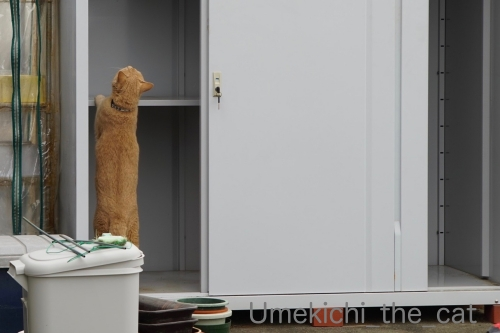
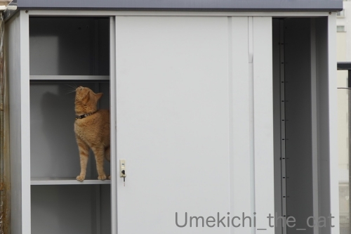
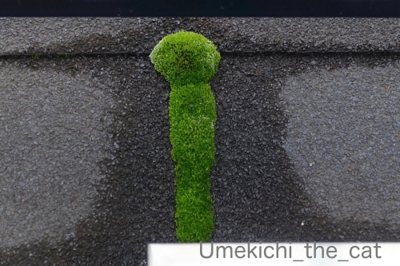
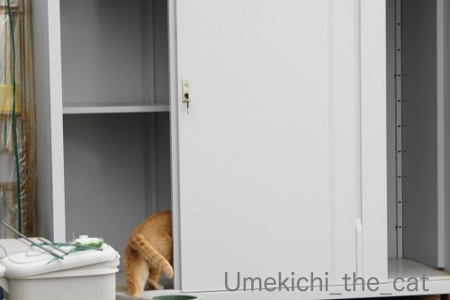
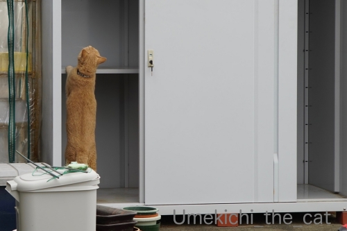
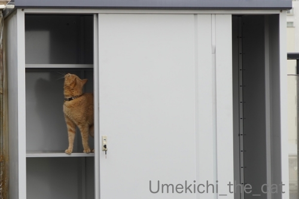
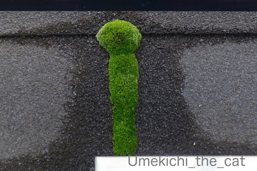

下僕が忙しいとわしも忙しい [梅吉]
いつもは閉まっている、あいていても入っちゃダメと言われる
ベランダの物置が開いている＆空いているー！！

こんなチャンスを逃すわけもなくw

![[猫]](https://blog.ss-blog.jp/_images_e/101.gif) どこまでいけるんやろか・・・・・
どこまでいけるんやろか・・・・・

1段目は登頂成功！
上に行くのは踏み切る場所がないのでちょっと無理な様でした(⌒-⌒;
おこもり生活、我が家は家でしたい事が山の様に！
今はベランダの使い勝手が良くなる様に「更に」（笑）カスタマイズが加速しておりますw
そして今年はクレマチス係に立候補したので（爆）
どんどん伸びてくる枝をせっせと誘引しております。
もちろん梅吉も大活躍ですw
ある程度お外を楽しんだら後はお家で寝ててくれて良いのに
ずーーーーーーーっと下僕に付き合って忙しくしています。
放っておいたら１日お外で過ごしますよ、お昼寝もせずに。
面白いことがあればお昼寝なんていらないのかしら？
もちろん家の中でも活躍中＾＾
（10秒 音は出ません＾＾）
これは我が家の季節の風物詩でもあります (≧▽≦)
初めてご覧いただく方もいらっしゃるかもしれないので軽く説明を。
梅吉は掃除機を全く怖がりません。
怖がらないどころか掃除機で空気を抜く圧縮袋を吸い始めると
なぜか掃除機にお怒り爆発！！
自身が吸引されても全く怯みません (⌒-⌒;
＊＊＊＊＊＊＊＊＊＊＊＊＊＊＊＊＊＊＊＊＊＊＊＊＊＊＊＊＊＊＊＊＊＊＊＊＊＊＊＊

ベランダに生えている苔が前方後円墳みたいになってます！
可愛いでしょ＾＾
前方後円墳・・・・
大阪では仁徳天皇陵とその一帯（百舌鳥・古市古墳群）が世界遺産に登録されたのを機に
気球に乗ってその全容を見てもらいましょうとういうお話が進んでいたのです。
その機会をとっても楽しみにしていたのですが・・・
今年は無理ですよねー。
いつから開始されるのかは予測もできませんが気長に待つことにいたします。
 ↑ガブッと一押し↑
↑ガブッと一押し↑
ベランダの物置が開いている＆空いているー！！

こんなチャンスを逃すわけもなくw


1段目は登頂成功！
上に行くのは踏み切る場所がないのでちょっと無理な様でした(⌒-⌒;
おこもり生活、我が家は家でしたい事が山の様に！
今はベランダの使い勝手が良くなる様に「更に」（笑）カスタマイズが加速しておりますw
そして今年はクレマチス係に立候補したので（爆）
どんどん伸びてくる枝をせっせと誘引しております。
もちろん梅吉も大活躍ですw
ある程度お外を楽しんだら後はお家で寝ててくれて良いのに
ずーーーーーーーっと下僕に付き合って忙しくしています。
放っておいたら１日お外で過ごしますよ、お昼寝もせずに。
面白いことがあればお昼寝なんていらないのかしら？
もちろん家の中でも活躍中＾＾
（10秒 音は出ません＾＾）
これは我が家の季節の風物詩でもあります (≧▽≦)
初めてご覧いただく方もいらっしゃるかもしれないので軽く説明を。
梅吉は掃除機を全く怖がりません。
怖がらないどころか掃除機で空気を抜く圧縮袋を吸い始めると
なぜか掃除機にお怒り爆発！！
自身が吸引されても全く怯みません (⌒-⌒;
＊＊＊＊＊＊＊＊＊＊＊＊＊＊＊＊＊＊＊＊＊＊＊＊＊＊＊＊＊＊＊＊＊＊＊＊＊＊＊＊

ベランダに生えている苔が前方後円墳みたいになってます！
可愛いでしょ＾＾
前方後円墳・・・・
大阪では仁徳天皇陵とその一帯（百舌鳥・古市古墳群）が世界遺産に登録されたのを機に
気球に乗ってその全容を見てもらいましょうとういうお話が進んでいたのです。
その機会をとっても楽しみにしていたのですが・・・
今年は無理ですよねー。
いつから開始されるのかは予測もできませんが気長に待つことにいたします。

カフェオレ色の梅吉

梅吉 2023年8月10日 永眠


梅吉と出会った譲渡会

犬猫の理由なき殺処分ゼロ
妄想広告
UMEKICHI 光

爆発的に早い！
時々攻撃的！
Thanks to Mr.Boss365
爆発的に早い！
時々攻撃的！
Thanks to Mr.Boss365

お家生活を色々楽しめるのは良いですね。
梅吉さんもますますご機嫌な様子で何よりです。
by zombiekong (2020-04-27 00:10)
暇つぶしに昼寝してるだけみたいですね。
寝てると思って作業し始めると目が輝きます（爆）
by ぽちの輔 (2020-04-27 06:06)
梅吉さん、闘志満々ですね^^「こいつ（掃除機）には負けないにゃあ」
by ニコニコファイト (2020-04-27 06:54)
うちも押し入れの中は「入っちゃダメ―」なので、
こっそり開けても走ってきます。そしてうっかり閉じ
込められる(笑)。
推しバンドが堺出身なので、大阪遠征の時は三国ヶ丘
に寄ります。仁徳天皇陵が近そうだから行ってみよう
かなと思ったら、三国ヶ丘からだと入口までが遠い。
すぐそこに見えるのになんて大きいんだろうと大きさ
だけ実感して帰ってきました。
by mio (2020-04-27 07:37)
梅吉さん！もしかして自分が吸われたいとか（笑
可愛い風物詩♪
お仕事が進みませんが、ほっこりしますね(#^.^#)
by きぃ (2020-04-27 08:15)
こんにちは！
相当、背の高い方の古墳ですね（"＾ω＾）・・・
by Take-Zee (2020-04-27 08:53)
物置チェックご苦労さんだニャ～？
掃除機と格闘もお疲れさん（ﾟ□ﾟ）
by 英ちゃん (2020-04-27 08:55)
梅吉さん掃除機が許せないのですね！
この時期毛が抜けるので掃除機ですっちゃえますね。
by ma2ma2 (2020-04-27 08:57)
滅多に開かない扉が開いている・・梅吉警備隊長としては見逃すわけにはいきませんね！
ウチのは、自力で上がれない高さの棚へ行きたい時は、下僕がやってくるのを息を潜めて待ち伏せ。背中を踏み台にして侵入します(≧▽≦)
わはは！圧縮袋の戦い、今年も激しいですね～っ。
GWは例年ファンヒーターと扇風機を入れ替えたり、衣替えしたり・・。
下僕もこてつも大忙しなのですが、さすがに8歳過ぎたらずっとは付き合えない様子で、今朝はさっさとコタツに入って寝てしまった^^;
ちょっと物足りない引きこもりウィークです。
窓辺のミニバラの蕾が膨らんできました！
暖冬で休眠しなかったので心配していましたが咲いてくれそう♪
出勤しなければ会話するのは相方とこてつだけ、8割どころではない大幅接触削減の我が家です^^
by ゆきち (2020-04-27 09:19)
いやー、梅吉さん、勇ましいですね！タックルに行くのはスバラシイ。
私もねぇ、家のこといろいろやればいいんだけどねぇ。
気力がわきませんわ(-_-;)
そういえば、うちのベランダも苔さんご来訪されて、面白い形を成したことがあったような記憶がうっすら。しかし、前方後円墳とはさすがです。
by ChatBleu (2020-04-27 10:12)
あはははは(笑)
今年も見られた！風物詩ｗｗ
ほんっと梅吉くんにとってはバトル相手なんだねえ(笑)
ベランダ、着々と快適空間がさらに進んでいるのね♪
わたしも、そろそろ花粉がおさまってきた気がするので
（目がかゆくなくなった！）
ベランダにアウトドア用の椅子を持ってこようかなーって思ってるよ^^
たまには日光用しないとねｗ
出た！古墳にコーフン！！ｗｗｗ
ほんと、気球計画しったとき嬉しかったのよ。
気球にも乗ってみたいし、やっぱり古墳は上空から眺めてみたい♪
いつか乗れますように＞＜
by リュカ (2020-04-27 10:20)
こんにちは。
ベランダの物置、何も入っていない？梅吉君には素晴らしい遊び場ですね。
二段目は登頂に期待しています。
広いルーフバルコニー、良いですね。楽しみも沢山ありそうです。
テントを張ってキャンプも出来そうです。
「クレマチス係」素晴らしいイングリッシュガーデン？になると推測！！期待しています。
掃除機対決、技名を忘れてしまいましたが、何回見ても梅吉君の回転技が見事ですね（爆）
前方後円墳、綺麗に繁殖！！ルーフバルコニーは退屈しない場所ですね！？(=^･ｪ･^=)
by Boss365 (2020-04-27 10:30)
ベランダのこんなに大きな物置が置けるなんて素晴らしい♪
中身を出して入れ替え作業でしょうか？
梅吉さんもお手伝いで大忙しですね(^^
前方後円墳のような苔作品はどのようにしたら完成するのでしょう！
うちのテラリウムの苔も春を迎えて新芽？がニョキニョキです。
圧縮袋の空気を抜く掃除機に立ち向かう梅吉さん頼もしいわｗ
うちのニャンズにはあり得ないシーンです。
今日の天気が良いのでクローゼットの中を入れ替え作業に取り掛かりましたが
1時間経過して捨てる洋服とひとまず保留とに分けたら飽きました。
一瞬部屋がとんでもない状態になり徐々に片付いていく作業の途中でいつも力尽きますｗ
by marimo (2020-04-27 10:43)
掃除機を怖がらない梅吉さんって勇敢ですね(^_^)
本当に苔が古墳に見えて笑っちゃいました。うちの小さな庭にに一昨年あたりから苔が増え始めて、不思議に思ってます。
by kou (2020-04-27 15:25)
我が家も最近、絶賛断捨離中でして、庭の物置の中も整理しました！
非常食用として買ってた水も、賞味期限切れにつき処分。。。
もっと前にチェックして飲めるときに飲めば良かったとちょっと後悔。
明日は処分業者を呼んでるんで、どっさり引き取ってもらいますよ～！
by よーちゃん (2020-04-27 17:19)
古墳見るって言うより
気球に乗れることの方が楽しみですよねぇ
良いなぁ 乗ってみたいなぁ
by (。・_・。)２ｋ (2020-04-27 17:27)
ニャンコさんは「普段は入っていけない」場所が
入っても良い状態（違うw）も見逃しませんねぇ(⌒-⌒; )
梅吉さん、２段目はお父さんかお母さんの背中に乗れば行けますよ( ^ω^ )→ノエルがいつもやってくれますw
瑞々しい苔、可愛い形に育ってますねぇ=(^.^)=
by ニッキー (2020-04-27 20:17)
掃除機タックルするなんてやっぱりすご過ぎます！
ウチのへたれは掃除機の音だけで逃げまくります。^^;
前方後円墳苔、オブジェみたいですね。
気球、乗ったことありません。どんな気分なんだろうなあ。^^)
by yes_hama (2020-04-27 21:32)
梅吉君、見事に伸びて上に行きましたね
普段は入れない場所は魅惑的なのだろうな～
我が家はらいむが来てから二階では掃除機を使ってないので
どうなるかわからないですが
逃げ回ってそうなきがするなぁ（＾＾；）
今のところクイックルワイパーとほうきで掃除してるんですが
らいむの抜け毛が増えてきたので
コードレス掃除機の購入を検討中です
買い物の記事にコメントありがとうございます
ありがたく、ちぃさん家の権利を１回分使わせていただきます（＾＾）
by 藤並 香衣 (2020-04-27 23:52)
梅吉さん、掃除機に果敢に攻めかかってますね！
吸われても平気って、抜け毛もこれで？？？
by nachic (2020-04-28 00:04)
自宅警備員の梅吉さん！
ベランダはもちろん物置にも異常なしといったところでしょうか(笑)
そして掃除機にまとわりつく梅吉さん・・・
スポッと吸い込まれて四角くならないようにご注意ください(^^♪
そしてこんな所にも前方後円墳。
世界遺産の古墳群に登録されたら見に行きますね☆
by yamatonosuke (2020-04-28 01:52)
物置、探検し放題、これは逃す手はないですね＾＾。
二本足で立って、上を見つめる姿、なんだか逞しい・・・と思ったら、果敢に掃除機に立ち向かっていく映像が。怖いもの無しなんだ、すごいなぁ。
前方後円墳・・・ということは、これ本当は逆なんですね、後ろの方が円なんだ。
緑の苔、可愛いい。乾燥しないように水やり、せっせとしたくなりますね＾＾。
by Inatimy (2020-04-28 05:43)
元気さんですね(^^♪
いつも一緒が楽しいんですよね
＊コメントありがとうございました
by らしゅえいむ (2020-04-28 18:08)
ちぃさん家の元気が嬉しいです。
我が家は皆、つつがなく暮らしています。
が、コロナのせいなのか？
私の『やる気』が勝手に出歩いています（笑）
by kiki (2020-04-28 22:21)
我が家はスローガンのように「断捨離！断捨離！」と叫んでおりますが
まったく着手に至りません。
カフェオレ色のひとが見張りに来てくれたらはかどるかも？！
by liang (2020-04-29 00:52)